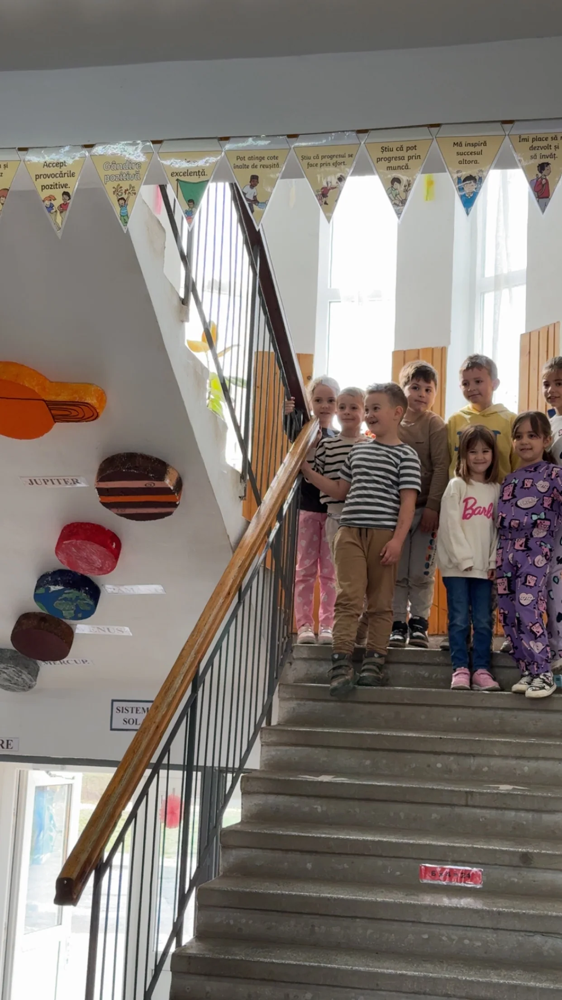
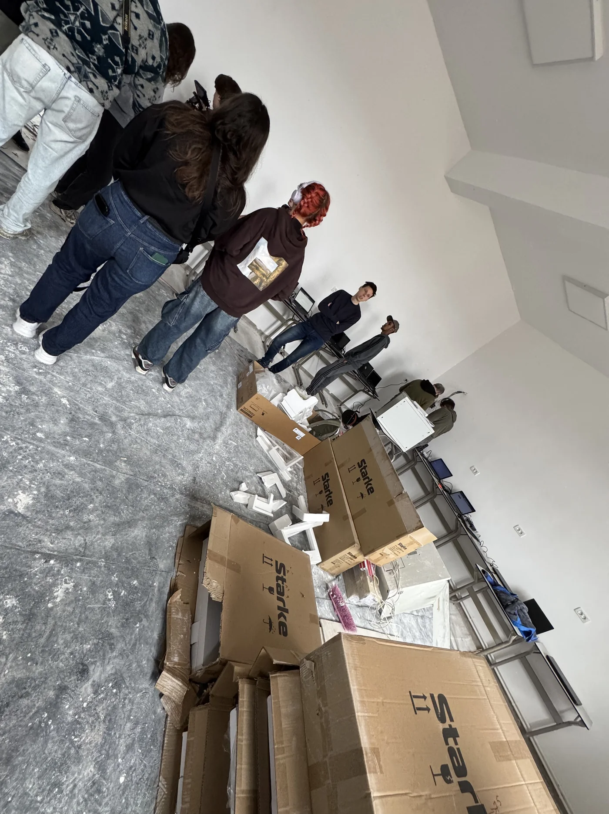
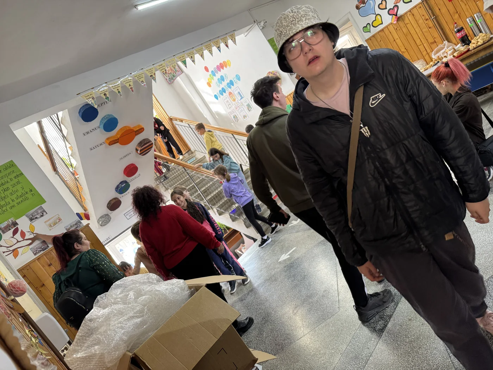
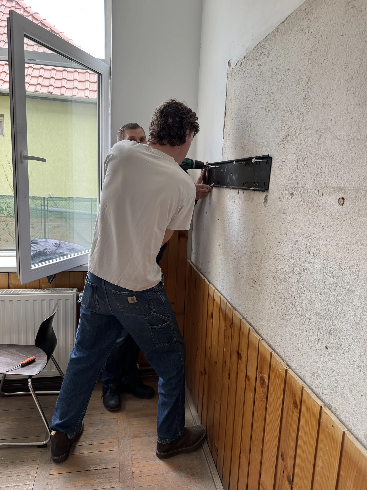
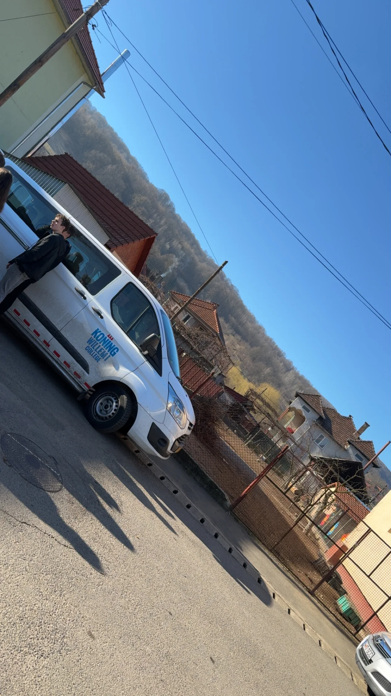
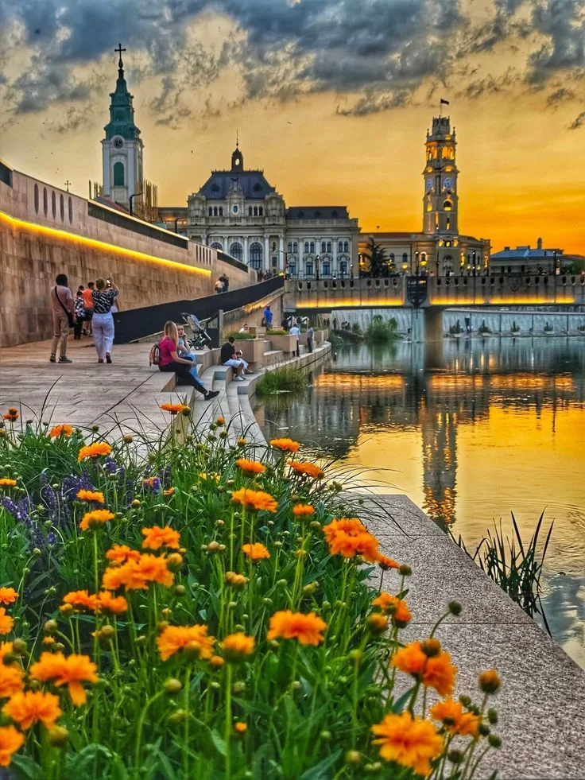
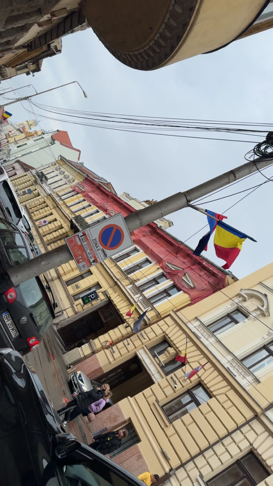
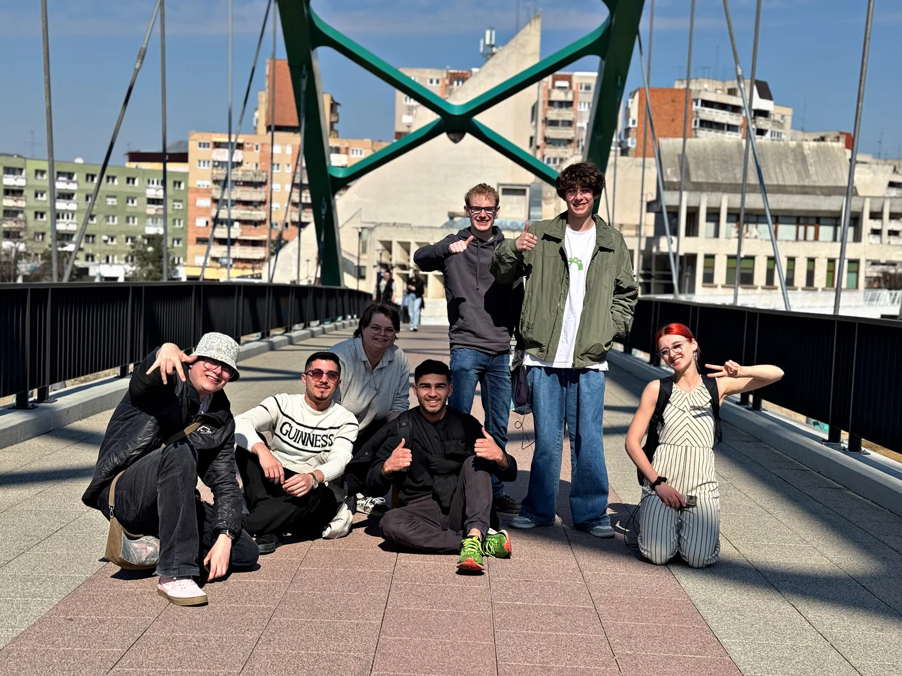

Tijdens deze internationale studiereis brachten we ICT, samenwerking en cultuur samen. We werkten aan echte technische opdrachten op scholen en leerden tegelijk omgaan met nieuwe situaties, mensen en verantwoordelijkheden.

Na aankomst werden we ontvangen bij Somebody Cares, de locatie die onze uitvalsbasis werd. Daar bespraken we de planning, verdeelden we taken en maakten we ons klaar voor de werkzaamheden op de scholen.

De eerste dagen stonden in het teken van voorbereiding. We controleerden apparatuur, maakten afspraken over de taakverdeling en zorgden dat we als team klaar waren voordat we naar de scholen gingen.

Op verschillende scholen installeerden we laptops en werkten we aan digitale voorzieningen. We hielpen ook met touchscreens en netwerkapparatuur. Het was motiverend om direct te zien wat de technische verbeteringen voor docenten en leerlingen betekenden.

Niet alles verliep precies volgens plan. Soms moesten we improviseren door beperkte middelen of onverwachte technische problemen. Juist daardoor oefenden we probleemoplossend denken en samenwerken onder druk.

Naast het technische werk werd de reis vastgelegd met interviews, foto's en video. Zo ontstond een compleet beeld van het project en konden we later terugkijken op zowel de techniek als de menselijke kant van de reis.

We maakten ook kennis met de Roemeense cultuur en omgeving. Daardoor werd het meer dan alleen een ICT-project: we kregen een breder beeld van het land en de mensen met wie we samenwerkten.

Een bezoek aan een lokale Roma-gemeenschap maakte veel indruk. Het gaf ons meer inzicht in verschillende leefomstandigheden en liet zien hoe belangrijk respect en een open houding zijn wanneer je in een andere omgeving werkt.

Het samen leven en werken zorgde voor sterke samenwerking. We hielpen elkaar met technische en praktische taken en leerden elkaar beter kennen. Dat teamgevoel was belangrijk voor het succes van het project.
De studiereis was een waardevolle combinatie van techniek, verantwoordelijkheid en persoonlijke groei. Ik kon mijn kennis in de praktijk gebruiken en tegelijk leren van een omgeving die heel anders was dan thuis.